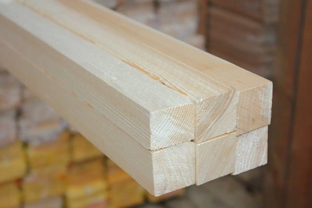
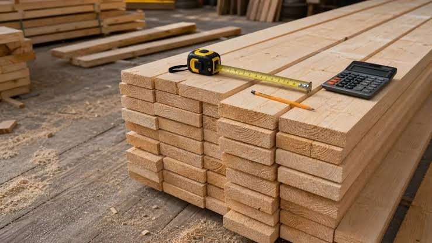

Брус, доска и вагонка для стройки и ремонта. Без посредников и переплат.
Узнать ценыООО «Лесопил» работает с 2010 года. У нас своя пилорама и сушильная камера, поэтому мы сами контролируем качество каждой доски.
Мы используем северную сосну и ель. Древесина медленно росла в холодном климате, поэтому она плотная, ровная и служит долго.
Нашими материалами строят дома, бани, заборы и беседки. Мы работаем и с частными покупателями, и со строительными компаниями.

Строганый брус из сосны естественной влажности. Подходит для каркаса дома, стропил и перекрытий. Размеры от 50×50 до 200×200 мм.
от 18 000 ₽ за м³

Ровная доска без коры, длина 6 метров. Подходит для полов, обрешётки, опалубки и заборов.
от 14 000 ₽ за м³
Гладкая доска для отделки стен и потолков. Сорта «Экстра», «А» и «Б».
от 350 ₽ за м²
Адрес: г. Лесной, Промышленная улица, 12
Телефон: 8 (800) 000-00-00
Почта: info@lesopil.example
Часы работы: пн–пт 8:00–18:00, сб 9:00–15:00, вс выходной